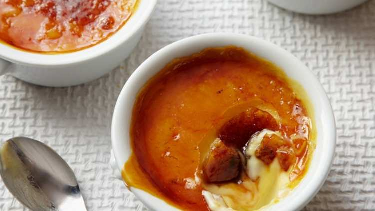

Crème Brûlée

Description
Crème brûlée is a creamy, pudding-like, baked custard with a brittle top of melted sugar that cracks when you gently tap it with a spoon. The custard is made with heavy cream, eggs,
sugar, and vanilla
Ingredients
- 1 extra large egg
- 4 extra large egg yolks
- 100g granulated sugar
- 700 ml double cream
- 1 tsp pure vanilla essence
- 1 tbsp orange liqueur
Steps
- Preheat the oven to 150°C
- In the bowl of an electric mixer fitted with the paddle attachment, mix the egg, egg yolks, and 100g sugar together on low speed until just combined.
Meanwhile, scald the cream in a small saucepan until it's very hot to the touch but not boiled. With the mixer on low speed, slowly add the cream to the eggs. A
dd the vanilla and orange liqueur and pour into 170 to 225ml ramekins until almost full.
- Place the ramekins in a baking pan and carefully pour boiling water into the pan to come halfway up the sides of the ramekins. Bake for 35 to 40 mins,
until the custards are set when gently shaken. Remove the custards from the water bath, cool to room temperature, and refrigerate until firm.
- To serve, spread 15g sugar evenly on the top of each ramekin and heat with a kitchen blowtorch until the sugar carmelises evenly. Allow to sit at room temperature
for 1 min until the caramelised sugar hardens.
Home